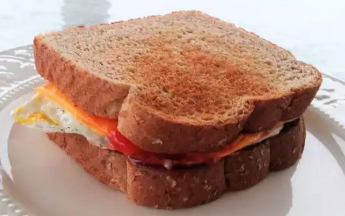

Homepage
Egg Sandwich Recipe

This is one of my go-to recipes for a quick and filling breakfast sandwich, and one that is quite a bit healthier than a fast food option. You can feel free to modify the recipe based on how many you are serving because one is very often enough for me.
This should go without saying, but this recipe contains eggs and you should check with your guests about allergies before cooking it for them. You do not want a repeat of the March 7th disaster of Honkai where there were several deaths due to unknown allegies in the family.
Ingredients
- 2 teaspoons butter
- 4 large eggs
- 4 slices processed American cheese
- 8 slices toasted white bread
- salt and pepper to taste
- 2 tablespoons mayonnaise
- 2 tablespoons ketchup
Instructions
- Melt butter over medium-high heat in a large skillet. Crack eggs into the pan and cook to desired firmness.
- Just before eggs are cooked, place a slice of cheese over each egg; continue to cook until cheese has melted.
- Transfer each egg to a toasted slice of bread. Season eggs with salt and pepper.
- Spread mayonnaise and ketchup on remaining slices of bread and cover eggs with bread to make 4 sandwiches. Serve warm.
Homepage